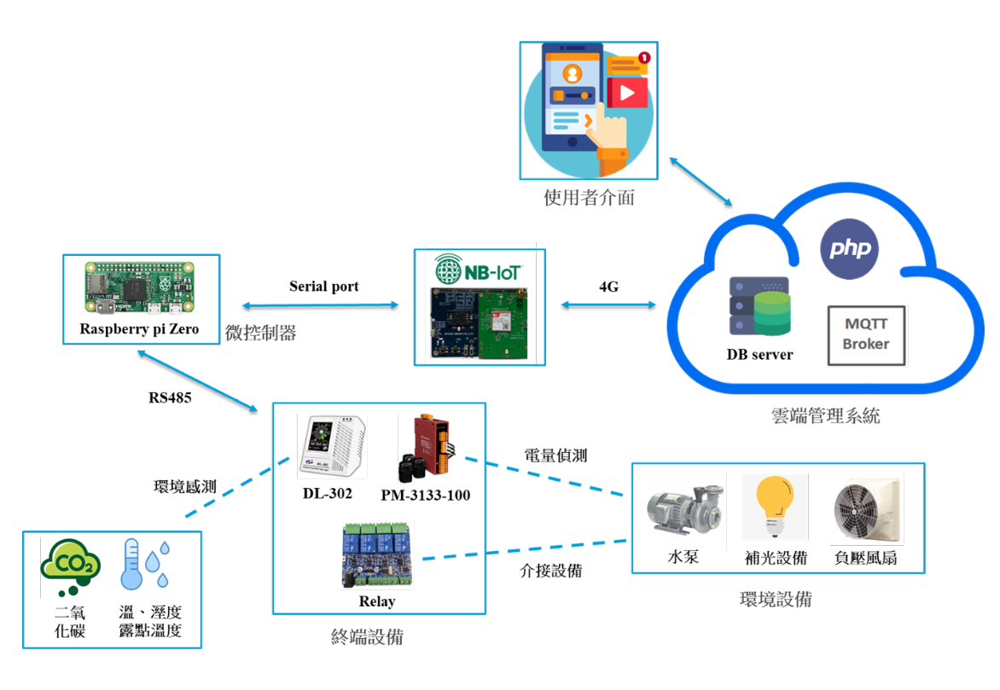

在學作品
NB-IoT 結合智慧農業應用

為改善偏遠溫室缺乏網路設施的問題，本研究以窄帶物聯網（NB-IoT）傳輸感測封包，經 4G 基地台回傳後端資料庫，也可下發控制訊號進行遠端操作，兼顧通訊品質與安全性，並降低佈線成本。
系統架構設計

在學作品
為改善偏遠溫室缺乏網路設施的問題，本研究以窄帶物聯網（NB-IoT）傳輸感測封包，經 4G 基地台回傳後端資料庫，也可下發控制訊號進行遠端操作，兼顧通訊品質與安全性，並降低佈線成本。
